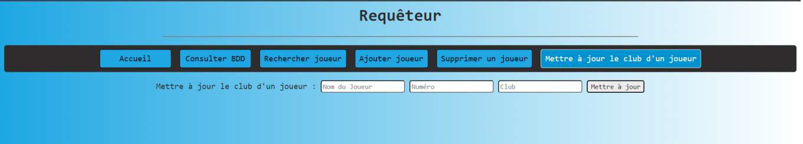
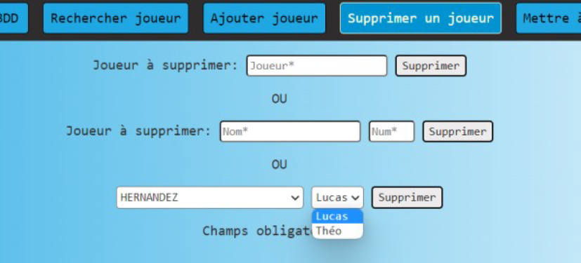

Mission 1 - Familiarisation avec un NAS
Ma mission avait pour but de retourner des informations stockées sur une base de données par le biais d'un NAS.
Afin de me familiariser avec le système d’exploitation DSM, il m’a simplement été demandé
d’afficher une fenêtre sur le réseau du DSM. Ce système d’exploitation laissant peut de possibilités
de travail, j’ai opté pour travailler en local sur ma machine Windows en partageant les données
un dossier partagé sur le réseau.
Mission 2 - Connexion base de données
Afin d’ajouter un peu d’assaisonnement à cette mission, l’heure est venue d’établir une connexion à
une base de données. Là encore, j’ai pu faire une nouvelle découverte, le logiciel HeidiSQL.
HeidiSQL est un outil d'administration de base de données possédant un éditeur SQL et un
constructeur de requête. Il a été développé et optimisé pour être utilisé avec le SGBD relationnel
MySQL.

Mission 3 - Création d'un CRUD
Mise en place d'un CRUD -Create Read Update Delete- sur le serveur web.
Mission 4 - Auto complétion de sélection
Installation d'un système d'auto complétion de sélection.